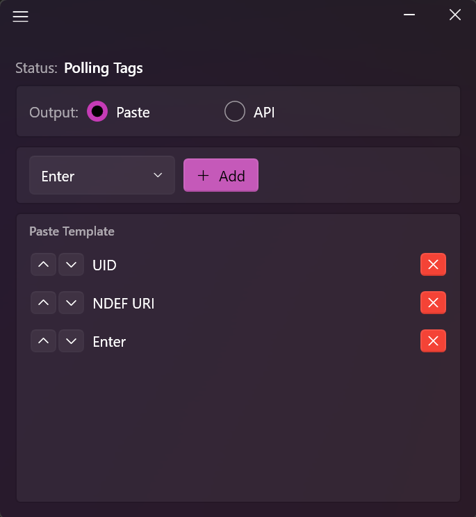

NFC Relay reads NFC tags via any PC/SC reader and either types the data at your cursor or sends it to an API endpoint. Simple, fast, and configurable.
Try free, then just $10/month

Build a template from tag data tokens — UID, NDEF text, NDEF URI — plus Enter, Tab, and custom text. Tap a tag and the data is typed at your cursor instantly.
Send tag data as JSON to any HTTP endpoint. Supports GET, POST, PUT, PATCH, DELETE with custom headers. Perfect for integrating NFC into your own workflows.
Connect any PC/SC compatible NFC reader via USB. NFC Relay detects it automatically.
Choose Paste mode with a custom template, or API mode pointed at your endpoint.
Reads UID and NDEF data instantly. The data goes where you told it to — cursor or API.